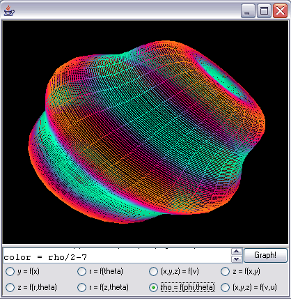
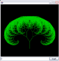

Mathematorium
By Curran Kelleher
Mathematoruim is a general API for mathematical expression evaluation and simple 3D graphics drawing using only pure Java. One key concept whose implementation is facilitated by this framework is that of bottlenecking all actions through a central execution console. This means that UI events always simply generate scripts (strings) and pass them to the central console to be interpreted and executed.

Graph3D
Download Graph3D as an executable .jar (Java Archive)
file
Graph3D is a program for interactive visualization of 2D, 3D (lines or surfaces), and 4D (time-dependent 3D) mathematical functions. It is intended for people seeking to develop intuition for mathematical functions, and people seeking an easy way to create crude visualizations of mathematical functions. It is build using the Mathematoruim API.
Usage Clarifications:
Double click the display for settings and parameters.
The text box is multi-lined, so hitting enter will not graph the function but rather bring you to the next line. To see multiple lines, expand the text area by moving the horizontal splitter.
There are two coloring modes:
Fixed cold-to-hot color mapping; assign the color variable values from 0 (cold, light blue) to 1 (hot, orange). This mode is demonstrated in default spherical coordinate (rho = f(phi,theta)) function.
Independent red, green, and blue coloring; assign the red, green, and blue variables values from 0 (no color) to 1 (full color). If one of these is left unassigned, it will display whatever value the variable was previously set to, so it is best to always assign something to all of them (use 0 if you're not using that color.) This mode is demonstrated in default parametric surface ((x,y,z) = f(v,u)) function.
Mathematorium
Example
Download MathematoriumSample as an
executable .jar (Java Archive) file
A simple parameterized tree fractal built on the Mathematoruim API.
Any parameter cam be manipulated either by using the sliders or modifying it in
the function.